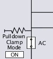
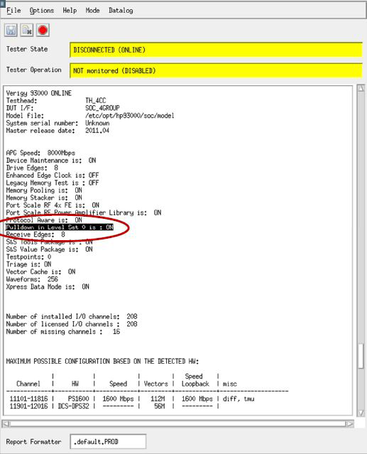
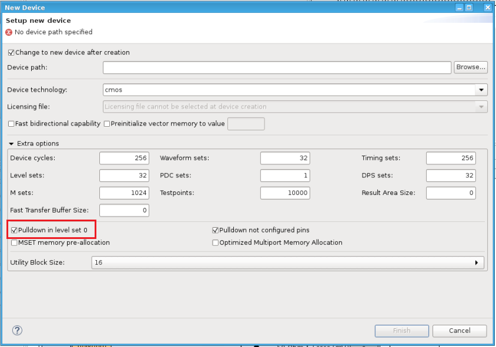
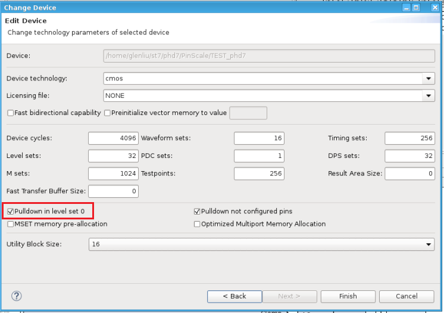
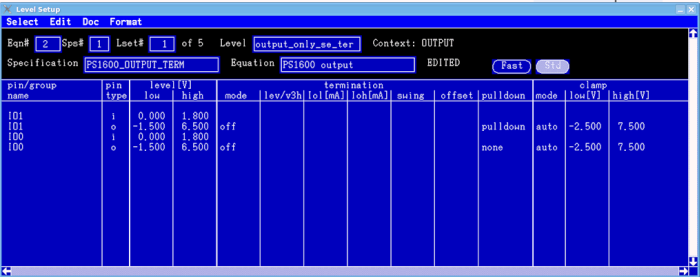

Pull-down function
Use the pull-down function to pull the input voltage to a defined level and to prevent an undefined state at the input of a pin of the digital card.
Disconnected digital pins are in tristate for low leakage. Electronics in tristate are always floating and this can cause side effects to DUT. For this purpose, SmarTest 7 offers mechanisms to terminate those pins. For PS1600, a switchable pull-down resistor is offered. For PS5000, active load pin line discharge can be used to terminate the pin to ground. Note that some care is required to avoid an impact of the pull-down resistor of PS1600 on a measurement result.
Controlling the pull-down function
The front-end circuitry of a PS1600 card offers an internal 14.3 kΩ pull-down resistor for every pin of the card. In the case of PS5000 cards, the pull-down functionality is offered by an active load pin line discharge. You can control the pull-down functionality on pin disconnect only. If the pin is active and connected, the pull-down will always be disengaged. By default SmarTest engages the pull-down on pin disconnect, unless specified otherwise.
- the AC relay is closed
- the PMU relay is closed
In the hardware view the pull-down resistor of a PS1600 card is shown below.

The pull-down behavior can be controlled in two ways:
- a global default setting which is applicable whenever you start SmarTest
- an explicit setting which overrides the default setting for configured pins.
When SmarTest starts, it reports the state of the pull-down resistor as defined in level set 0. Refer to the red callout in the Report Window shown below.

Global default setting defined by level set 0
To have the pull-down resistor disabled as a global default, have the related entry in the .technology file set off. This can be accomplished in the following ways:
- Add an entry
pulldown_in_level_set_0: offin the .technology file.With
pulldown_in_level_set_0: onthe pull-down resistor could be enabled as a global default, but this has the same effect as if there were no entry. - When creating a device, untick the preselected checkbox "Pulldown in level set 0 enabled" as
shown below

- When changing the device, untick the preselected checkbox "Pulldown in level set 0 enabled"
as shown below

Explicit setting
In the Level Setup tool, you can connect the pull-down resistor by selecting the pulldown keyword in the pulldown column as shown below. To disconnect the pull-down resistor select none.

In the level equation set, you switch the pull-down resistor with the parameter values
term off pulldown, term off. The code below depicts the case
of the pull-down resistor disengaged as a global default.
EQNSET 5 "Pulldown" MODECONTEXT "DEFAULT" SPECS # starts the declaration of the specs EQUATIONS LEVELSET 1 "pulldown" PINS P1 P3 term off
To switch the pull-down resistor off in the run state use term off. To switch
it on use term off pulldown. The line directly above the pull-down statement
must be a PINS declaration one.
DC measurements with sequencer in off-state
- Disabling the pull-down resistor
-
In order to disable the pull-down resistor in level set 0, execute the following sequence.
TERM 0,OFF,NONE,,,,,,(pin_group) SQST BRK SQST OFF
- Enabling the pull-down resistor
-
In order to re-enable the pull-down resistor in level set 0, execute the following sequence.
TERM 0,OFF,PULLDOWN,,,,,,(pin_group) SQST BRK SQST OFF
Functional changes
- Introduced in SmarTest 7.10.2